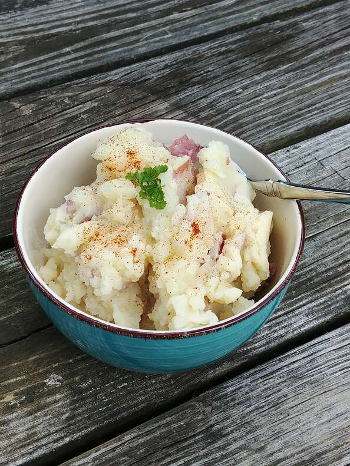

Mashed Potatoes

Fluffy Mashed Potatoes
These mashed potatoes are heavenly! They are a wonderful addition to any meal; for the holidays or any time of the year.
Use firm organic Russet potatoes for best results. You will have this recipe memorized before you know it, because your family will be asking for it over and over!
Ingredients
- 4 pounds potatoes, peeled and cut into chunks
- 4 cups water
- 2 cups vegetable broth
- 4 cloves garlic, thinly sliced
- 1 cup rice milk
Steps
- Combine potatoes, water, broth, and garlic in a pot. Bring to a boil; reduce heat to medium-low and cook until soft, about 15 minutes.
- Drain potatoes and reserve cooking water. Return potatoes to the pot and stir over medium heat until any excess moisture is cooked off, about 1 minute.
- Remove pot from heat. Add some reserved cooking water and rice milk, alternating between them, while stirring vigorously. Stop before potatoes become too soggy or liquid begins to accumulate in the pot.